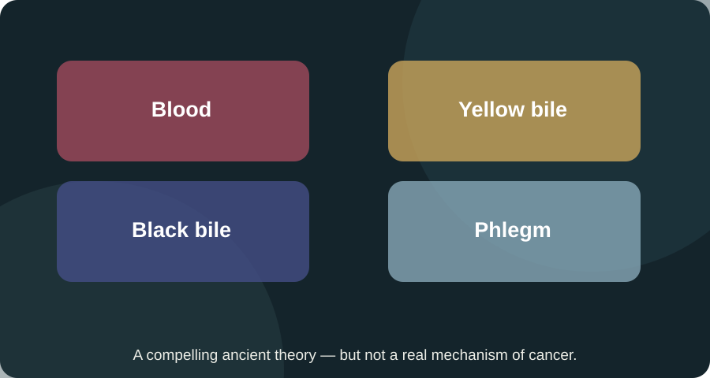
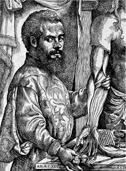

1. Why giving a disease a name matters
The chapter begins with an idea that sounds simple but has enormous consequences: before doctors can study a disease, they must decide what they are looking at and what to call it. A name can make a condition visible to medicine. It can also build an incorrect explanation into how generations think about it.
In ancient times, medical terminology was often deeply metaphorical. Diseases were named for their appearance, symptoms, or imagined causes. A patient would first describe a story of suffering; only afterward would a physician turn that story into a diagnosis. Mukherjee shows that cancer's ancient names contain the history of changing beliefs about its nature.
2. Hippocrates names cancer after a crab
Around 400 BCE, the Greek physician Hippocrates used the term karkinos, meaning crab, to describe certain tumors. Why a crab? Some tumors had a central lump with swollen blood vessels stretching outward, resembling a crab's body and legs. Others felt hard or gripped nearby tissues, suggesting claws or a tough shell.
The comparison was visually memorable, though not all cancers resemble crabs. The modern word cancer grew from this ancient imagery through Latin. It is important to remember that Hippocrates did not diagnose tumors with modern criteria. His category included many visible swellings, some of which might have been benign or caused by infections.
Doctors could see breast, skin, jaw, tongue, or neck masses, but they had no microscopes and could not identify mutations or the cellular origin of malignancy. Their understanding was limited by what the unaided eye and hand could observe.
3. “Onkos” and the burden of disease
Another Greek word, onkos, could refer to a mass, load, or burden. It became the linguistic root of oncology, the medical specialty focused on cancer. The word suggests both the physical weight of a tumor and the emotional weight of carrying a threatening illness.
In ancient Greek theater, related imagery could describe an imposing burden borne by a tragic character. Mukherjee draws attention to this connection because cancer is not only a collection of abnormal cells. It can also become a weight upon a person's family, identity, plans, and sense of future.

4. The four humors: An ancient theory of health
Greek medicine was influenced by the idea that the body contained four important fluids, or humors: blood, phlegm, yellow bile, and black bile. Health supposedly depended on their balance. Illness was explained as the consequence of one fluid becoming excessive or moving to the wrong place.
This made sense to physicians who did not yet understand germs, cells, hormones, or DNA. If a person became feverish, swollen, or weak, the doctor tried to connect visible symptoms to an invisible imbalance of fluid. The framework was broad enough to offer an explanation for almost any disease, which made it appear useful—even when there was little evidence behind it.
| Ancient humor | Commonly associated ideas in humoral medicine |
|---|---|
| Blood | Warmth, redness, and certain forms of inflammation |
| Phlegm | Cool, pale, boggy swellings |
| Yellow bile | Certain yellow-colored illnesses such as jaundice |
| Black bile | Cancer and melancholia, according to later Galenic theory |
These were historical beliefs, not medically accepted explanations today.
5. Galen turns cancer into a black-bile disease
The highly influential physician Galen, practicing in the Roman world during the second century CE, expanded and formalized the humoral theory. He believed cancer arose when black bile accumulated and became trapped within tissues. This supposedly produced the hard, dark, threatening mass that doctors recognized as a tumor.
Galen treated cancer as more than a local lump. If the underlying problem was an excess of black bile circulating in the body, removing one tumor would not correct the deeper condition. The poisonous fluid would simply remain and create another swelling.
We now know that this explanation was wrong. There is no black bile causing cancer. But the theory was powerful because it appeared to account for a genuinely difficult observation: some cancers returned after a tumor had been removed. It offered a coherent story for why surgery might fail, even though the proposed mechanism was imaginary.
6. Why the black-bile idea discouraged surgery
Galen's theory had a direct consequence for treatment. If cancer originated in a systemic imbalance rather than in the mass itself, a surgeon's knife might remove a visible symptom without curing the disease. Many physicians therefore advised against operating except in unusual cases.
The warning persisted through the Middle Ages and into early modern medicine. Surgeons argued that cutting into a cancer could turn a closed lesion into an ulcerating and bleeding wound. Their concern was reinforced by the reality of premodern surgery: no reliable anesthesia, inadequate infection control, and a high risk of fatal bleeding or infection.
To a patient, an operation might mean being restrained while a surgeon cut into a breast or other organ with crude instruments. Some procedures used cauterizing irons or caustic substances that burned tissue. Even if Galen's theory was mistaken, avoiding such operations might sometimes have spared people terrible suffering.
7. Bleeding, purging, and strange treatments
If cancer was imagined as a buildup of harmful fluid, doctors tried to remove or rebalance bodily fluids. They prescribed bloodletting, purgatives, laxatives, and a huge range of ointments and remedies. Some treatments were merely ineffective; others were toxic and dangerous.
The book mentions substances as strange as animal parts, mineral preparations, botanical extracts, and blessed water. Such treatments might have seemed plausible within the humoral framework: if illness was caused by material trapped within the body, perhaps some other material could draw it out.
The problem was that the theory was rarely tested against reliable results. When a treatment failed, a doctor could blame the patient's condition, an incorrect mixture, or the timing of the intervention rather than questioning the underlying model.
8. An accidental insight inside a false theory
Galen was wrong about the origin of tumors, but he had stumbled into an important clinical difficulty. Cancer can recur or spread, and removing one mass is not always enough to cure a patient. That is because malignant cells may have spread beyond the area of surgery, not because a fluid called black bile continues circulating.
This is a recurring theme in the book: an observation can be correct while its explanation is completely wrong. Galen noticed the failure of some local operations and built a theory around it. The theory then became so influential that it limited the search for other ways of understanding cancer.

9. The deeper meaning of Chapter 5
The names karkinos and onkos show how much medicine once depended on physical images and metaphor. The humoral theory shows how an elegant explanation can survive for centuries when it fits people's expectations and when alternative evidence is scarce. The reluctance to operate also reveals an uncomfortable paradox: a medically wrong theory sometimes discouraged procedures that were themselves extremely dangerous.
Chapter takeaway: Cancer's ancient names survived, but the ancient explanation of black bile was mistaken. The lesson is to distinguish what doctors observed, how they explained it, and whether a treatment actually helped patients. Those are three different questions.